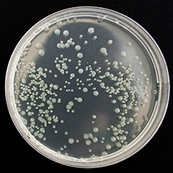

分析会社はどこも同じ。そう考えていませんか？
“検査する”だけではない、水質分析.comの安心ポイントをご紹介します。
分析技術者による一貫対応
少数精鋭ならではの人材力を活かした、
オーダーメイドの検査・分析を各ご依頼ごとに、
専属の分析技術者が最後まで担当いたします。
採水サービス
東京・神奈川・埼玉・千葉で専門スタッフによる
採水サービスを行っており、
お客様による採水の手間を省きます。
精度管理
常に確かな検査結果をお届けするために、
社内クロスチェックに加え、
外部の技能試験に参加し、
技能と精度の向上に取り組んでいます。
法定登録検査機関
当社は建築物飲料水水質検査業、計量証明事業
（濃度）の法定登録検査機関です。当社で発行し
た水質検査結果報告書、計量証明書は公的な書
類として使用することができます。
年間1万2千件の検査実績
様々な業種のお客様に各種水質検査のほか、
細菌検査や各種環境分析といった幅広い分野
の検査をご利用いただいております。
検査は全国対応！
特急対応も可能！
全国から各種検査のご相談を承っております。
また、検査をお急ぎの場合は、
特急対応も承ります。
当たり前の存在に当たり前の安心を。
飲料水水質検査
多くの人が口にする飲料水の安全を確かめる重要な検査です。建築物衛生法に基づいた定期的な検査や食品衛生法に基づいた検査を行います。
雑用水水質検査
トイレの水洗、植栽の水やり、噴水などの修景水に処理水を再利用した雑用水にも厳格な衛生管理が求められます。
プール水水質検査
フィットネスクラブなどのプール水は、遊泳用プールや学校環境の衛生基準、自治体の条例で維持管理が定められた検査を行います。
風呂水水質検査
ホテルや旅館を始め、福祉施設など浴場がある場合は、風呂水の水質検査が必要です。公衆浴場法や各自治体の条例に基づいた検査を行います。
冷却水水質検査
腐食やスケールによるトラブルの未然防止のために、冷凍空調機器用水質ガイドラインに基づいた検査を行います。
排水分析
工事などの事業場や病院、商業施設からの排水の検査です。物質や地域の条例により検査項目や基準値がことなるので、その施設に適切な検査を行います。
漏水分析
漏水調査に伴う水質検査を行います。漏水に含まれる成分から水の種類（雨水、汚水、生活排水など）や原因を推定いたします。
目に見えないものだから
測るとわかる、見えてくる。
一般細菌（水質）

一般細菌は、河川や土壌、食品や空気中、そして私たちの体にも広く存在しています。一般細菌（水質）の検査を行うことで水の汚染状況を知る目安となります。
大腸菌（水質）
大腸菌は動物の糞便に含まれている代表的な菌のため、水道法で定期的に検査することが義務付けられています。
レジオネラ属菌 (水質)
レジオネラ属菌による感染事故を防ぐための検査を行います。温泉や循環型浴槽水、プール水などの衛生管理を徹底するための検査です。
衛生状態確認検査
食品の製造、調理現場などが細菌で汚染されていないかを検査し、洗浄や清掃後の衛生状態を確認する検査をご提案いたします。
腸内細菌検査
水道設備に直接触れる機会の多い方が保菌者ではないことを確認し、細菌などを原因とした飲料水汚染による感染症を未然に防ぐための検査です。
落下菌・浮遊菌検査
落下菌および浮遊菌の検査は、清潔度評価のためのモニタリング調査に有効な手段です、室内壁のカビ予防対策や空調設備などに役立つ検査です。
身近な環境にも安心を。
簡易専用水道検査
有効容量が10m²を超える受水槽は、清掃や水質のチェック、検査機関による現場検査などが義務付けられています。
異物検査
水道の蛇口や、清掃した配管から異物が出てきた場合に、顕微鏡観察や分析装置などを用いた検査でその異物が何であるか、推定いたします。
ばい煙測定
特定建築物は、建築物衛生法により空気環境測定を義務付けられています。学校環境衛生基準など、様々な基準の測定に対応します。
空気環境測定
大気汚染の原因物質が発生する施設は、大気汚染物質の排出が規制されています。ボイラー、冷温水発生機などの排出ガス検査を行います。
土壌分析
土壌汚染対策法に基づいた溶出検査や含有試験を行います。ご相談内容に応じて適切な試験方法と検査項目をご提案いたします
放射能測定
水、食品、土壌、汚泥などの放射線物質の量を測定致します。簡易測定と精密測定とありますのでご要望に応じてご提案致します。
1
ご依頼
2
専用サンプリング
キットの送付
3
サンプリング
4
発送
5
検査実施
6
報告書郵送
蛇口をひねるだけで出てくる水、毎日の料理で使用する調理器具、趣味に興じるために利用する公共施設。何気なく生活し利用している中で、「安心」・「安全」に使うことができるのが“当たり前”ですが、その当たり前を実現させるために様々な検査が活用されています。しかし、もしも、水が汚れていたら…。もしも、調理器具が雑菌で汚染されていたら…。もしも、施設が適切に管理されていなかったら…。そのような「不安」や「脅威」を感じたりしたことはないでしょうか？
水質分析.comでは、そのような不安や脅威から皆様をお守りし、人々が快適で便利な生活を送れるよう、世の中のあらゆる施設・設備に対し、一歩進んだ技術から生み出される「安心」・「安全」をご提供しています。
水質分析.comは、個人のお客様・法人のお客様に関わらずご相談を受け付けています。また、ご相談の窓口では分析における幅広い知識と技術を身に付けた専門家である「分析技術者」が直接のヒアリングを行う体制をとっています。水質分析や排水分析など水に関する事柄にとどまらず、細菌についての検査、設備維持に関わる環境分析に至るまで、すべての問題についての解決策をご提案いたします。